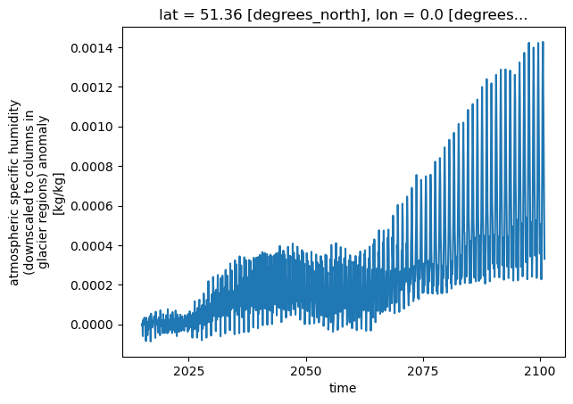

Make your own forcing data from ERA5
Introduction: There are lots of forcing data can be used to drive the model, such as ERA5, NCEP (https://psl.noaa.gov/data/gridded/data.ncep.reanalysis.html), etc. Here, we recommend ERA5 to make your own single point forcing as the NCEP and others are too big to download. The ERA5 data can be obtained in a small scale, which usually light weight to download and store.
Step 1: Download the required variables from the cdsapi
First, we will use the cdsapi package to download the data. If you don’t have the package installed, you can install it using the following command:
pip install cdsapi
cat <<EOF > ~/.cdsapirc
url: {api-url}
key: {uid}:{api-key}
EOF
[1]:
import xarray as xr
import numpy as np
import pandas as pd
[2]:
raw_forcing = xr.open_dataset('inputfolder/Urban-PLUMBER/datm_files/UK-Kin/CLM1PT_data/forcing.nc')
raw_forcing = raw_forcing.sel(time=slice('2003', '2004'))
raw_forcing
[2]:
<xarray.Dataset>
Dimensions: (time: 35088, x: 1, y: 1)
Coordinates:
* time (time) datetime64[ns] 2003-01-01 ... ...
* x (x) int32 1
* y (y) int32 1
Data variables: (12/50)
Prectmms (time, y, x) float32 ...
Wind (time, y, x) float32 ...
Zbot (time, x, y) float32 ...
LWdown (time, y, x) float32 ...
LWdown_qc (time) int8 ...
PSurf (time, y, x) float32 ...
... ...
topsoil_clay_fraction (y, x) float32 ...
topsoil_sand_fraction (y, x) float32 ...
tree_area_fraction (y, x) float32 ...
tree_mean_height (y, x) float32 ...
wall_to_plan_area_ratio (y, x) float32 ...
water_area_fraction (y, x) float32 ...
Attributes: (12/29)
title: Continuous meterological forcing from UK-King...
summary: Flux tower observations from Kings College, L...
sitename: UK-KingsCollege
long_sitename: Kings College, London, United Kingdom
version: v1
keywords: urban, flux tower, eddy covariance, observations
... ...
source: https://github.com/matlipson/urban-plumber_pi...
other_references: ERA5: Copernicus Climate Change Service (C3S)...
acknowledgements: Contains modified Copernicus Climate Change S...
comment: Observations from KSSW tower
history: Thu May 2 13:18:48 2024: ncap2 -O -s time=lo...
NCO: netCDF Operators version 4.8.1 (Homepage = ht...[3]:
if np.datetime64(raw_forcing.time[-1].values) == np.datetime64('2015-12-31T23:30:00'):
print('Last time step is 23:00')
[8]:
anomaly = xr.open_dataset('/Users/user/Downloads/af.allvars.CESM.SSP3-7.0.2015-2100_c20220628.nc')
anomaly.sel(lat=51.5, lon=0.5, method='nearest').huss.plot()
[8]:
[<matplotlib.lines.Line2D at 0x15b756f70>]

[5]:
anomaly
[5]:
<xarray.Dataset>
Dimensions: (time: 1032, lat: 192, lon: 288)
Coordinates:
* time (time) object 2015-01-16 00:00:00 ... 2100-12-16 00:00:00
* lat (lat) float64 -90.0 -89.06 -88.12 -87.17 ... 88.12 89.06 90.0
* lon (lon) float64 0.0 1.25 2.5 3.75 5.0 ... 355.0 356.2 357.5 358.8
Data variables:
landmask (lat, lon) int32 ...
area (lat, lon) float64 ...
landfrac (lat, lon) float64 ...
tas (time, lat, lon) float64 ...
pr (time, lat, lon) float64 ...
rsds (time, lat, lon) float64 ...
rlds (time, lat, lon) float64 ...
huss (time, lat, lon) float64 ...
ps (time, lat, lon) float64 ...
uas (time, lat, lon) float64 ...
vas (time, lat, lon) float64 ...
Attributes: (12/15)
Created_on: 2022/06/28
title: anomaly forcing data
note1: Anomaly/scale factors calculated relative ...
history: Tue Jun 28 2022: created by ./ssp_anomaly_...
gitdescribe: branch_tags/ssp_af.n02_ctsm5.1.dev099
Source: CMIP6 CESM simulations
... ...
Created_by: erik
Created_from_historical_dirs: /glade/campaign/collections/cmip/CMIP6/tim...
Created_from_scenario_dirs: /glade/campaign/collections/cmip/CMIP6/tim...
History_years: 1995,2014
Scenario_years: 2015,2100
institution: National Center for Atmospheric Research[56]:
a = anomaly.sel(lat=51.5, lon=0.5, method='nearest')
a= a.assign_coords(time = a.indexes['time'].to_datetimeindex())
a
/var/folders/0r/sbwms16j3z5c45znn0hsvrl80000gp/T/ipykernel_2550/454876068.py:2: RuntimeWarning: Converting a CFTimeIndex with dates from a non-standard calendar, 'noleap', to a pandas.DatetimeIndex, which uses dates from the standard calendar. This may lead to subtle errors in operations that depend on the length of time between dates.
a= a.assign_coords(time = a.indexes['time'].to_datetimeindex())
[56]:
<xarray.Dataset>
Dimensions: (time: 1032)
Coordinates:
lat float64 51.36
lon float64 0.0
* time (time) datetime64[ns] 2015-01-16 2015-02-13 ... 2100-12-16
Data variables:
landmask int32 ...
area float64 ...
landfrac float64 ...
tas (time) float64 ...
pr (time) float64 ...
rsds (time) float64 ...
rlds (time) float64 ...
huss (time) float64 ...
ps (time) float64 ...
uas (time) float64 ...
vas (time) float64 ...
Attributes: (12/15)
Created_on: 2022/06/28
title: anomaly forcing data
note1: Anomaly/scale factors calculated relative ...
history: Tue Jun 28 2022: created by ./ssp_anomaly_...
gitdescribe: branch_tags/ssp_af.n02_ctsm5.1.dev099
Source: CMIP6 CESM simulations
... ...
Created_by: erik
Created_from_historical_dirs: /glade/campaign/collections/cmip/CMIP6/tim...
Created_from_scenario_dirs: /glade/campaign/collections/cmip/CMIP6/tim...
History_years: 1995,2014
Scenario_years: 2015,2100
institution: National Center for Atmospheric Research[96]:
from typing import Union
from datetime import datetime
var_dict = {'Tair': 'tas', 'Qair': 'huss', 'Wind': 'uas,vas',
'SWdown': 'rsds', 'LWdown': 'rlds',
'Prectmms': 'pr', 'PSurf': 'ps'}
def get_anomaly_frocing(raw_forcing: Union[xr.Dataset, str],
anomaly: Union[xr.Dataset, str],
lat : float,
lon : float,
var_dict : dict,
outputname : str) -> xr.Dataset:
"""
Args:
era5 (_type_): the era5 dataset, or the path of the era5 dataset
lat (_type_): latitude of interest point
lon (_type_): longitude of interest point
outputname (_type_): the output file name
Returns:
_type_: the forcing dataset
"""
if isinstance(raw_forcing, str):
forcing = xr.open_dataset(raw_forcing)
elif isinstance(raw_forcing, xr.Dataset):
forcing = raw_forcing
else:
raise ValueError("The era5 should be a xarray dataset or a file path.")
if isinstance(anomaly, str):
anomaly = xr.open_dataset(anomaly)
elif isinstance(anomaly, xr.Dataset):
anomaly = anomaly
else:
raise ValueError("The anomaly should be a xarray dataset or a file path.")
anomaly = anomaly.sel(lat=lat, lon=lon, method='nearest')
# check the forcing date
forcing_start_year = pd.to_datetime(forcing.time.values[0]).year
forcing_end_year = pd.to_datetime(forcing.time.values[-1]).year
#forcing = forcing.resample(time='30T').interpolate('linear')
while forcing_end_year < anomaly.time.values[-1].year:
offsetyear = pd.to_datetime(forcing.time.values[-1]).year - pd.to_datetime(forcing.time.values[0]).year
new_times = pd.to_datetime(forcing['time'].values) + pd.DateOffset(years=offsetyear)
forcing_ = forcing.copy()
forcing_['time'] = new_times
forcing = xr.concat([forcing, forcing_], dim='time')
forcing_end_year = pd.to_datetime(forcing.time.values[-1]).year
forcing = forcing.sortby('time')
anomaly = anomaly.resample(time='M').ffill()
anomaly = anomaly.resample(time='30T').ffill()
anomaly = anomaly.assign_coords(time = anomaly.indexes['time'].to_datetimeindex())
#print(str(pd.to_datetime(anomaly.time.values[0]).year), str(pd.to_datetime(anomaly.time.values[-1]).year))
forcing = forcing.sel(time=slice(str(pd.to_datetime(anomaly.time.values[0])),
str(pd.to_datetime(anomaly.time.values[-1]))))
print(forcing.time.values.shape, anomaly.time.values.shape)
for var in var_dict:
if var == 'Wind':
uas, vas = var_dict[var].split(',')
forcing[var] = forcing[var] + (anomaly[uas]**2 + anomaly[vas]**2)**0.5
else:
forcing[var] = forcing[var] + anomaly[var_dict[var]]
return forcing
[97]:
ds = get_anomaly_frocing(
raw_forcing,
anomaly,
51.5,
0.5,
var_dict,
'outputfile.nc'
)
/var/folders/0r/sbwms16j3z5c45znn0hsvrl80000gp/T/ipykernel_2550/3521555786.py:57: RuntimeWarning: Converting a CFTimeIndex with dates from a non-standard calendar, 'noleap', to a pandas.DatetimeIndex, which uses dates from the standard calendar. This may lead to subtle errors in operations that depend on the length of time between dates.
anomaly = anomaly.assign_coords(time = anomaly.indexes['time'].to_datetimeindex())
(3014594,) (1505233,)
---------------------------------------------------------------------------
ValueError Traceback (most recent call last)
Cell In[97], line 1
----> 1 ds = get_anomaly_frocing(
2 raw_forcing,
3 anomaly,
4 51.5,
5 0.5,
6 var_dict,
7 'outputfile.nc'
8 )
Cell In[96], line 72, in get_anomaly_frocing(raw_forcing, anomaly, lat, lon, var_dict, outputname)
70 forcing[var] = forcing[var] + (anomaly[uas]**2 + anomaly[vas]**2)**0.5
71 else:
---> 72 forcing[var] = forcing[var] + anomaly[var_dict[var]]
74 return forcing
File ~/miniconda3/envs/u_climate_yjj/lib/python3.9/site-packages/xarray/core/_typed_ops.py:241, in DataArrayOpsMixin.__add__(self, other)
240 def __add__(self, other: DaCompatible) -> Self:
--> 241 return self._binary_op(other, operator.add)
File ~/miniconda3/envs/u_climate_yjj/lib/python3.9/site-packages/xarray/core/dataarray.py:4663, in DataArray._binary_op(self, other, f, reflexive)
4661 if isinstance(other, DataArray):
4662 align_type = OPTIONS["arithmetic_join"]
-> 4663 self, other = align(self, other, join=align_type, copy=False)
4664 other_variable_or_arraylike: DaCompatible = getattr(other, "variable", other)
4665 other_coords = getattr(other, "coords", None)
File ~/miniconda3/envs/u_climate_yjj/lib/python3.9/site-packages/xarray/core/alignment.py:888, in align(join, copy, indexes, exclude, fill_value, *objects)
692 """
693 Given any number of Dataset and/or DataArray objects, returns new
694 objects with aligned indexes and dimension sizes.
(...)
878
879 """
880 aligner = Aligner(
881 objects,
882 join=join,
(...)
886 fill_value=fill_value,
887 )
--> 888 aligner.align()
889 return aligner.results
File ~/miniconda3/envs/u_climate_yjj/lib/python3.9/site-packages/xarray/core/alignment.py:582, in Aligner.align(self)
580 self.results = self.objects
581 else:
--> 582 self.reindex_all()
File ~/miniconda3/envs/u_climate_yjj/lib/python3.9/site-packages/xarray/core/alignment.py:557, in Aligner.reindex_all(self)
556 def reindex_all(self) -> None:
--> 557 self.results = tuple(
558 self._reindex_one(obj, matching_indexes)
559 for obj, matching_indexes in zip(
560 self.objects, self.objects_matching_indexes
561 )
562 )
File ~/miniconda3/envs/u_climate_yjj/lib/python3.9/site-packages/xarray/core/alignment.py:558, in <genexpr>(.0)
556 def reindex_all(self) -> None:
557 self.results = tuple(
--> 558 self._reindex_one(obj, matching_indexes)
559 for obj, matching_indexes in zip(
560 self.objects, self.objects_matching_indexes
561 )
562 )
File ~/miniconda3/envs/u_climate_yjj/lib/python3.9/site-packages/xarray/core/alignment.py:544, in Aligner._reindex_one(self, obj, matching_indexes)
538 def _reindex_one(
539 self,
540 obj: T_Alignable,
541 matching_indexes: dict[MatchingIndexKey, Index],
542 ) -> T_Alignable:
543 new_indexes, new_variables = self._get_indexes_and_vars(obj, matching_indexes)
--> 544 dim_pos_indexers = self._get_dim_pos_indexers(matching_indexes)
546 return obj._reindex_callback(
547 self,
548 dim_pos_indexers,
(...)
553 self.exclude_vars,
554 )
File ~/miniconda3/envs/u_climate_yjj/lib/python3.9/site-packages/xarray/core/alignment.py:510, in Aligner._get_dim_pos_indexers(self, matching_indexes)
508 if obj_idx is not None:
509 if self.reindex[key]:
--> 510 indexers = obj_idx.reindex_like(aligned_idx, **self.reindex_kwargs)
511 dim_pos_indexers.update(indexers)
513 return dim_pos_indexers
File ~/miniconda3/envs/u_climate_yjj/lib/python3.9/site-packages/xarray/core/indexes.py:817, in PandasIndex.reindex_like(self, other, method, tolerance)
813 def reindex_like(
814 self, other: Self, method=None, tolerance=None
815 ) -> dict[Hashable, Any]:
816 if not self.index.is_unique:
--> 817 raise ValueError(
818 f"cannot reindex or align along dimension {self.dim!r} because the "
819 "(pandas) index has duplicate values"
820 )
822 return {self.dim: get_indexer_nd(self.index, other.index, method, tolerance)}
ValueError: cannot reindex or align along dimension 'time' because the (pandas) index has duplicate values
[100]:
ds.sortby('time')
[100]:
<xarray.Dataset>
Dimensions: (time: 1505233)
Coordinates:
* time (time) object 2015-01-31 00:00:00 ... 2100-12-31 00:00:00
lat float64 51.36
lon float64 0.0
Data variables:
landmask int32 ...
area float64 ...
landfrac float64 ...
tas (time) float64 ...
pr (time) float64 ...
rsds (time) float64 ...
rlds (time) float64 ...
huss (time) float64 ...
ps (time) float64 ...
uas (time) float64 ...
vas (time) float64 ...
Attributes: (12/15)
Created_on: 2022/06/28
title: anomaly forcing data
note1: Anomaly/scale factors calculated relative ...
history: Tue Jun 28 2022: created by ./ssp_anomaly_...
gitdescribe: branch_tags/ssp_af.n02_ctsm5.1.dev099
Source: CMIP6 CESM simulations
... ...
Created_by: erik
Created_from_historical_dirs: /glade/campaign/collections/cmip/CMIP6/tim...
Created_from_scenario_dirs: /glade/campaign/collections/cmip/CMIP6/tim...
History_years: 1995,2014
Scenario_years: 2015,2100
institution: National Center for Atmospheric Research